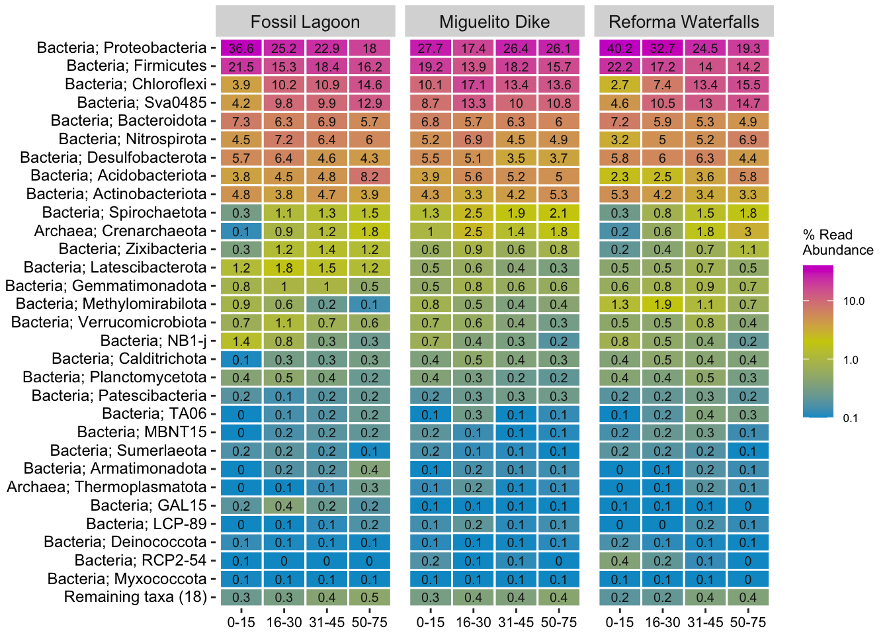

Relative Abundances
01. Load libraries
02. Prepare data
02.1 Create Phyloseq Object
ps <- qza_to_phyloseq(
features = "data/ASV_table_filter_freq218_emc.qza",
tree = "data/rooted-tree-iqtree.qza",
taxonomy = "data/taxonomy.qza",
metadata = "data/metadata2.tsv")# check
psphyloseq-class experiment-level object
otu_table() OTU Table: [ 7097 taxa and 50 samples ]
sample_data() Sample Data: [ 50 samples by 29 sample variables ]
tax_table() Taxonomy Table: [ 7097 taxa by 7 taxonomic ranks ]
phy_tree() Phylogenetic Tree: [ 7097 tips and 7096 internal nodes ]02.2 Check data
#library(microbiome)
microbiome::summarize_phyloseq(ps)Compositional = NO21] Min. number of reads = 664132] Max. number of reads = 6748463] Total number of reads = 90064984] Average number of reads = 180129.965] Median number of reads = 171486.57] Sparsity = 0.5668845991263916] Any OTU sum to 1 or less? NO8] Number of singletons = 09] Percent of OTUs that are singletons
(i.e. exactly one read detected across all samples)010] Number of sample variables are: 29SampleIDDepthDepthsSiteSample_typeDateLocationTemp...C..intSalnidad..ppm.intSalinidad..ppt.intpH.intpHsupRedox.medido.en.campo1Redox.mV..Eh.intTemperatura...C.supSalnidad..ppm.supSalinidad..ppt.supRedox.medido.en.campoRedox.mV..Eh.supS.2..mg.l..campoml.de.muestra1Factor.de.dilucion1S.2..mg.l.ID_MSO.....mg.l..campoml.de.muestra2Factor.de.dilucion2SO.....mg.l.2[[1]]
[1] "1] Min. number of reads = 66413"
[[2]]
[1] "2] Max. number of reads = 674846"
[[3]]
[1] "3] Total number of reads = 9006498"
[[4]]
[1] "4] Average number of reads = 180129.96"
[[5]]
[1] "5] Median number of reads = 171486.5"
[[6]]
[1] "7] Sparsity = 0.566884599126391"
[[7]]
[1] "6] Any OTU sum to 1 or less? NO"
[[8]]
[1] "8] Number of singletons = 0"
[[9]]
[1] "9] Percent of OTUs that are singletons \n (i.e. exactly one read detected across all samples)0"
[[10]]
[1] "10] Number of sample variables are: 29"
[[11]]
[1] "Sample" "ID" "Depth"
[4] "Depths" "Site" "Sample_type"
[7] "Date" "Location" "Temp...C..int"
[10] "Salnidad..ppm.int" "Salinidad..ppt.int" "pH.int"
[13] "pHsup" "Redox.medido.en.campo1" "Redox.mV..Eh.int"
[16] "Temperatura...C.sup" "Salnidad..ppm.sup" "Salinidad..ppt.sup"
[19] "Redox.medido.en.campo" "Redox.mV..Eh.sup" "S.2..mg.l..campo"
[22] "ml.de.muestra1" "Factor.de.dilucion1" "S.2..mg.l."
[25] "ID_M" "SO.....mg.l..campo" "ml.de.muestra2"
[28] "Factor.de.dilucion2" "SO.....mg.l." 02.3 Rename mangrove system
# Extract metadata
metadata <- as(sample_data(ps), "data.frame")
# Rename specific levels in the Mangrove system column
#library(dplyr)
metadata <- metadata %>%
mutate(`Location` = case_when(
Location == "El Cacahuate" ~ "Fossil Lagoon",
Location == "La Piedad" ~ "Reforma Waterfalls",
Location == "Dique Miguelito" ~ "Miguelito Dike",
TRUE ~ Location))
# update sample_data in phyloseq object
sample_data(ps) <- sample_data(metadata)02.4. Color pallets
02.5 Check samples
# Samples Plot
# Reorder samples
metadata$Location <- factor(
metadata$Location,
levels = c("Fossil Lagoon", "Reforma Waterfalls",
"Miguelito Dike"))
#plot
samples_plot <- ggplot(metadata, aes(x = Location, y = ..count..,
fill = Location)) + geom_bar(position = "dodge") +
facet_wrap(~ Location, scales = "free_x") +
labs(title = "Samples of the analysis", y = "Number of Samples",
x = "Mangrove system") +
theme_bw() +
theme(axis.text.x = element_text(angle = 0)) +
scale_fill_manual(values = loc_colors)
# show plot
print(samples_plot)Warning: The dot-dot notation (`..count..`) was deprecated in ggplot2 3.4.0.
ℹ Please use `after_stat(count)` instead.02.6 Get full core
# Get full core with microbiome
full_ps_core_counts <- core(ps, 0, 0.5)
# Check
psphyloseq-class experiment-level object
otu_table() OTU Table: [ 7097 taxa and 50 samples ]
sample_data() Sample Data: [ 50 samples by 29 sample variables ]
tax_table() Taxonomy Table: [ 7097 taxa by 7 taxonomic ranks ]
phy_tree() Phylogenetic Tree: [ 7097 tips and 7096 internal nodes ]full_ps_core_countsphyloseq-class experiment-level object
otu_table() OTU Table: [ 2048 taxa and 50 samples ]
sample_data() Sample Data: [ 50 samples by 29 sample variables ]
tax_table() Taxonomy Table: [ 2048 taxa by 7 taxonomic ranks ]
phy_tree() Phylogenetic Tree: [ 2048 tips and 2047 internal nodes ]02.7 Save object in RDS to next analysis
saveRDS(ps, "rds/interior_mangroves/phyloseq.rds")03. Relative abundance phyloseq objects
03.1 Create ampvis objects
Create full, core and Site ampvis objects
# library(tibble)
# library(ampvis2)
# Ampvis object function
create_ampvis_object <- function(pseq) {
# create and extract otu table
otu_table_ampvis <- data.frame(OTU = rownames(phyloseq::otu_table(pseq)@.Data),
phyloseq::otu_table(pseq)@.Data,
phyloseq::tax_table(pseq)@.Data,
check.names = FALSE)
# Metadata
meta_data_ampvis <- data.frame(phyloseq::sample_data(pseq),
check.names = FALSE)
# change index by SampleID
meta_data_ampvis <- meta_data_ampvis %>% rownames_to_column(var = "SampleID")
# ampvis object
av2 <- amp_load(otu_table_ampvis, meta_data_ampvis)
return(av2)
}# phyloseq objects
phyloseq_objects <-list(ps=ps, full_ps_core_counts = full_ps_core_counts)
# Apply function
ampvis_objects <- lapply(phyloseq_objects, create_ampvis_object)
ampvis_objects$ps
ampvis2 object with 3 elements.
Summary of OTU table:
Samples OTUs Total#Reads Min#Reads Max#Reads Median#Reads
50 7097 9006498 66413 674846 171486.5
Avg#Reads
180129.96
Assigned taxonomy:
Kingdom Phylum Class Order Family Genus
7097(100%) 7077(99.72%) 7043(99.24%) 6811(95.97%) 6795(95.74%) 6672(94.01%)
Species
4818(67.89%)
Metadata variables: 30
SampleID, Sample, ID, Depth, Depths, Site, Sample_type, Date, Location, Temp...C..int, Salnidad..ppm.int, Salinidad..ppt.int, pH.int, pHsup, Redox.medido.en.campo1, Redox.mV..Eh.int, Temperatura...C.sup, Salnidad..ppm.sup, Salinidad..ppt.sup, Redox.medido.en.campo, Redox.mV..Eh.sup, S.2..mg.l..campo, ml.de.muestra1, Factor.de.dilucion1, S.2..mg.l., ID_M, SO.....mg.l..campo, ml.de.muestra2, Factor.de.dilucion2, SO.....mg.l.
$full_ps_core_counts
ampvis2 object with 3 elements.
Summary of OTU table:
Samples OTUs Total#Reads Min#Reads Max#Reads Median#Reads
50 2048 6092185 45680 451490 114651
Avg#Reads
121843.7
Assigned taxonomy:
Kingdom Phylum Class Order Family Genus
2048(100%) 2043(99.76%) 2031(99.17%) 1960(95.7%) 1957(95.56%) 1913(93.41%)
Species
1336(65.23%)
Metadata variables: 30
SampleID, Sample, ID, Depth, Depths, Site, Sample_type, Date, Location, Temp...C..int, Salnidad..ppm.int, Salinidad..ppt.int, pH.int, pHsup, Redox.medido.en.campo1, Redox.mV..Eh.int, Temperatura...C.sup, Salnidad..ppm.sup, Salinidad..ppt.sup, Redox.medido.en.campo, Redox.mV..Eh.sup, S.2..mg.l..campo, ml.de.muestra1, Factor.de.dilucion1, S.2..mg.l., ID_M, SO.....mg.l..campo, ml.de.muestra2, Factor.de.dilucion2, SO.....mg.l.#subset amp obj
av2_full <- ampvis_objects$ps
av2_full_core <- ampvis_objects$full_ps_core_counts03.2 Kingdom
av2_full$metadata$Depth <- factor(av2_full$metadata$Depths, levels = c("0-15", "16-30", "31-45", "50-75"))
ampv_heatmap_abundances_king_full <- amp_heatmap(av2_full,
group_by = "Depth",
facet_by = "Location",
plot_values = TRUE,
tax_show = 25,
tax_aggregate = "Kingdom",
plot_colorscale = "log10",
plot_values_size = 3,
color_vector = c("deepskyblue3", "yellow3" ,"magenta3"))+
theme(axis.text.x = element_text(angle = 0, size=9,
hjust = 0.5, vjust = 0.5),
axis.text.y = element_text(size=12, hjust = 1),
legend.position="right")
ampv_heatmap_abundances_king_fullGet data
# library(microbiome)
# library(microbiomeutilities)
# library(dplyr)
king_abundances <- taxa_summary(ps,"Kingdom")Data provided is not compositional
will first transformking_abundances Taxa Max.Rel.Ab Mean.Rel.Ab Median.Rel.Ab
1 d__Archaea 0.132017376126457 0.0231528152808648 0.0141264487609834
2 d__Bacteria 0.999715207898234 0.976847184719135 0.985873551239017
Std.dev
1 0.0247080819800889
2 0.024708081980088903.3 Phylum full
plot
ampv_heatmap_abundances_phylum_loc_full <- amp_heatmap(av2_full,
group_by = "Depth",
facet_by = "Location",
plot_values = TRUE,
tax_show = 30,
showRemainingTaxa = TRUE,
tax_aggregate = "Phylum",
tax_add = "Kingdom",
plot_colorscale = "log10",
plot_values_size = 2.6,
color_vector = c("deepskyblue3", "yellow3" ,"magenta3"))+
theme(axis.text.x = element_text(angle = 0, size=8,
vjust = 1, hjust = 0.5),
axis.text.y = element_text(size=9),
legend.position="right")
ampv_heatmap_abundances_phylum_loc_full**Get info**
#library(ampvis2)
#heatmap
phy_ab_depth <- amp_heatmap(av2_full,
#group_by = "Depth",
facet_by = c("Depth","Site","Location"),
plot_values = FALSE,
tax_show = 30,
textmap = TRUE,
tax_aggregate = "Phylum")
# library(dplyr)
# library(tidyr)
# library(tibble)
# Transform data.frame to long format
phy_ab_long <- phy_ab_depth %>%
rownames_to_column("Phylum") %>%
pivot_longer(
cols = -Phylum,
names_to = "Sample_Location",
values_to = "Abundance"
) %>%
separate(Sample_Location, into = c("Sample","Depth", "Site", "Location"), sep = " ") %>%
mutate(
Depth = gsub("-cm", "", Depth) # Clean depth name
)Warning: Expected 4 pieces. Additional pieces discarded in 1500 rows [1, 2, 3, 4, 5, 6,
7, 8, 9, 10, 11, 12, 13, 14, 15, 16, 17, 18, 19, 20, ...].# mean and sd Depth and Location
phy_ab_summary_stats <- phy_ab_long %>%
group_by(Phylum, Depth, Location) %>%
summarise(
mean_abundance = mean(Abundance, na.rm = TRUE),
sd_abundance = sd(Abundance, na.rm = TRUE),
.groups = "drop"
)
# show
phy_ab_summary_stats# A tibble: 360 × 5
Phylum Depth Location mean_abundance sd_abundance
<chr> <chr> <chr> <dbl> <dbl>
1 Acidobacteriota 0-15 Fossil 6.96 0.808
2 Acidobacteriota 0-15 Miguelito 5.27 1.75
3 Acidobacteriota 0-15 Reforma 5.59 1.35
4 Acidobacteriota 16-30 Fossil 7.17 0.870
5 Acidobacteriota 16-30 Miguelito 6.48 0.845
6 Acidobacteriota 16-30 Reforma 4.47 0.717
7 Acidobacteriota 31-45 Fossil 6.65 1.01
8 Acidobacteriota 31-45 Miguelito 6.50 1.21
9 Acidobacteriota 31-45 Reforma 4.77 1.19
10 Acidobacteriota 50-75 Fossil 8.87 1.87
# ℹ 350 more rows# Format table
phy_depth_table <- phy_ab_summary_stats %>%
pivot_wider(
names_from = Location,
values_from = c(mean_abundance, sd_abundance),
names_sep = "_"
)
phy_depth_table# A tibble: 120 × 8
Phylum Depth mean_abundance_Fossil mean_abundance_Miguelito
<chr> <chr> <dbl> <dbl>
1 Acidobacteriota 0-15 6.96 5.27
2 Acidobacteriota 16-30 7.17 6.48
3 Acidobacteriota 31-45 6.65 6.50
4 Acidobacteriota 50-75 8.87 6.12
5 Actinobacteriota 0-15 3.75 3.52
6 Actinobacteriota 16-30 2.84 2.31
7 Actinobacteriota 31-45 3.73 2.77
8 Actinobacteriota 50-75 3.05 3.15
9 Armatimonadota 0-15 0.0361 0.193
10 Armatimonadota 16-30 0.231 0.407
# ℹ 110 more rows
# ℹ 4 more variables: mean_abundance_Reforma <dbl>, sd_abundance_Fossil <dbl>,
# sd_abundance_Miguelito <dbl>, sd_abundance_Reforma <dbl># save
write.table(phy_depth_table, "Tables/Phylum_depth_location_stats.tsv", row.names = FALSE, sep = "\t", quote = FALSE)03.4 Phylum Core
#Factor Depth_cm
av2_full_core$metadata$Depth <- factor(av2_full_core$metadata$Depths, levels = c("0-15", "16-30", "31-45", "50-75"))
# Full all samples
ampv_heatmap_abundances_phylum_core <- amp_heatmap(av2_full_core,
group_by = "Depth",
facet_by = "Location",
plot_values = TRUE,
tax_show = 30,
showRemainingTaxa = TRUE,
tax_aggregate = "Phylum",
tax_add = "Kingdom",
plot_colorscale = "log10",
plot_values_size = 2.6,
color_vector = c("deepskyblue3", "yellow3" ,"magenta3"))+
theme(axis.text.x = element_text(angle = 0, size=8,
vjust = 1, hjust = 0.5),
axis.text.y = element_text(size=9),
legend.position="right")
ampv_heatmap_abundances_phylum_core
03.5 Combine plots
library(cowplot)
#Combine venn plot
title_abund_plot <- ggdraw() + draw_label("Relative Abundance", fontface = 'bold', x = 0.5, hjust = 0.5, size = 15)
ampv_all_phylum_plots <- plot_grid(title_abund_plot, ampv_heatmap_abundances_phylum_loc_full, ampv_heatmap_abundances_phylum_core, labels = c("", "A", "B"), ncol = 1, rel_heights = c(0.10, 1.2, 1.2))
ampv_all_phylum_plots#save
ggsave("Figures/interior_mangroves/Abundances_Phylum_full_and_core.pdf", ampv_all_phylum_plots, width = 18, height = 30, units = "cm")Dominants
#psgen <- aggregate_taxa(p0,"Genus")
tax_dominant <- dominant_taxa(ps,level = "Phylum", group="Location")
head(tax_dominant$dominant_overview)# A tibble: 6 × 5
# Groups: Location [3]
Location dominant_taxa n rel.freq rel.freq.pct
<chr> <chr> <int> <dbl> <chr>
1 Fossil Lagoon Proteobacteria 13 92.9 93%
2 Miguelito Dike Chloroflexi 13 54.2 54%
3 Miguelito Dike Proteobacteria 9 37.5 38%
4 Reforma Waterfalls Proteobacteria 8 66.7 67%
5 Reforma Waterfalls Chloroflexi 3 25 25%
6 Miguelito Dike Firmicutes 2 8.3 8%